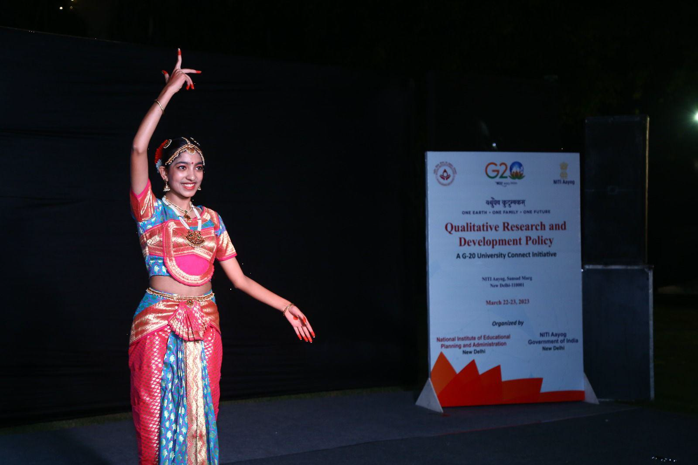

MasterStrokes 2025
SHOULD I BE HELD RESPONSIBLE FOR WHAT I BELIEVE?
Beliefs form the core of our existence. Without them, we won’t be any different from creatures who can not think for themselves. Our belief system is our identity. It drives our every action and reaction to every minute thing in the world. Our belief system is built by our interaction with the environment. From our culture to our friendships to the books we read and movies we watch, all play a highly critical and crucial role in forming our belief system. However, just like we have a certain kind of belief system, there will always be others who possess a different kind of belief system. On certain occasions, these different belief systems will be on the opposite side of our own belief system and that is when the question of right or wrong will be raised and whether or not one should be held responsible for their belief system will be discussed.
The Question of Binary: According to French anthropologist Claude Lévi
Strauss, narratives are drawn from the existence of binary oppositions such as good vs evil,
male vs female, etc.
According to him, this conflict between the binary oppositions is what drives a narrative
forward. This concept of binary opposition can be used in today’s social scenario to
understand how different and opposing belief systems co-exist at the same time and help
make society more inclusive.
However, what is more important to understand is that it’s almost impossible to categorise
opposing belief systems as right or wrong. To understand this better, let’s take a look at
an
example.
People who believe in the freedom of religion are right on the grounds that every individual has the right to decide which faith they believe in, but people who oppose this very stance of freedom of religion are also right on the grounds that according to many of them, it will hinder the state’s role in maintaining national security in the long run. True, there are examples of countries that have succeeded in uniting a multi-religious population, like India, but the examples of countries that have failed in this respect are also not unfamiliar to any. Hence, it’s almost impossible to declare one belief system as right and the other as wrong, as both have their fair share of merit. However, what determines what is more meritorious is the context in which each belief system is exercised.
The Question of Accountability: The most intriguing fact about beliefs is
that they don’t exist in a vacuum. They possess real-life implications. And this is exactly
where the question of
accountability comes to light. Beliefs begets actions. In most cases, these actions are too
extreme, too discriminatory and too violent and often result in irrevocable trauma to those
who were on the victim end of such beliefs.Thus, accountability becomes primarily important
when discussing the repercussions of said
beliefs. Having the freedom to form whatever belief one finds suitable is not wrong in any
shape or form.
It should be rather encouraged to have and form different belief systems as it will allow for more diverse opinions and facts on matters that were earlier ignored or not thought of very much. But when these beliefs spill into one’s actions and affect how one treats others and reacts to certain instances in society, accountability for these beliefs must be taken.Accountability and responsibility for such beliefs may include being open to re-evaluating one’s stance on certain matters, being able to put oneself in another person’s shoes to understand where the person is coming from and rephrasing one’s thoughts better to help others understand them. Being accountable and responsible for one’s beliefs doesn’t involve just justifying why one's particular belief is better but it also involves justifying why the other’s belief is not good enough in certain respects and how can one’s belief system remedy the same.
To understand this better, let’s take an example from the recent Disney Pixar film Inside Out 2(2024). In that particular film, it showcased how the emotion Anxiety discarded the old “sense of self” or Riley’s (the main protagonist) belief system without giving any justifiable reason as to why her belief is better apart from stating that Riley needs to change to fit into her new school system better. Later the emotion Joy replaced the contorted “sense of self” that Anxiety had created with the old “sense of self” only to realise that it didn’t work either. Both the “sense of self” failed to work in Riley’s mind because she was growing up and needed a different kind of “sense of self” that was a mix of all the good and the bad. Mind you both the good and the bad. But the issue here is how Anxiety failed to describe why exactly the old “sense of self” will fail.
In her haste to prove she was right, she failed to make the other emotions understand why she thinks her idea is better, which only led to more trouble for the other emotions as they continued to search for the old “sense of self” as they still believed in it. In the end, this hastiness cost Anxiety catastrophic chaos that resulted in Riley having a panic attack and Anxiety losing control completely. It was a result of one emotion having a higher influence over others. It was only when both Anxiety and Joy took accountability and responsibility for their preference for a certain “sense of self” or belief system for Riley that Riley could finally truly be happy and stable as with accountability came acknowledgement that they lacked somewhere and they gave Riley the space to flourish on her own.
A balance, in the truest sense, is what is needed for a strong belief system. Accountability and responsibility when it comes to one’s belief system matters as they ensure credibility, keep one in check and further ensure rationality. It also ensures that your belief system is accepted by others and helps in its proliferation (something Anxiety could have achieved had she explained to Joy where exactly the old “sense of self” lacked and how her new “sense of self” for Riley would help). As we are already aware that belief begets action, we must justify how our belief systems are better than others to ensure that the action is taken in the right direction, keeping in mind all the other belief systems.
The Job of Education & Law: When it comes to helping someone understand the different belief systems and form one that resonates with them, education comes into play. The role of education is to foster minds and nourish them to allow them to form belief systems that they can justify and account for themselves. It’s only in an academic sphere that one gets the opportunity to explore and engage with various belief systems in an intellectually curious manner. It is a space that celebrates Chinua Achebe while also canonising Joseph Conrad’s Heart of Darkness. Academia is the perfect intersection of all the belief systems in the world as it offers a place of learning that, by default, requires one to interact with certain spaces that they may not be comfortable with or haven’t explored enough. However, it is also a space that teaches the value of accountability and responsibility, as is highlighted in the practice of academic criticism. The role of the law does not involve curbing the rights of an individual to exercise their freedom of speech or belief.
Rather, the role of the law is to protect the very same by coming up with laws and policies that curb the additional side effects of certain belief systems that result in discriminatory practices, violent protests, etc. The law has often been revised to keep pace with current times and belief systems. The introduction of the Mental Health Care Act 2017 led to the decriminalisation of suicide attempts, which was previously punishable under Section 309 of the Indian Penal Code. Given the stigma attached to suicide and how it is considered a sin in many religions, it came as no wonder that it was considered a punishable offence under the Indian Penal Code. But with the change in people’s belief system with the influx of knowledge about mental health, the act of suicide was viewed from a different lens and hence was decriminalised.
Conclusion:Hence, one thing that can be agreed upon without a shred of doubt is that I am responsible for what I believe. The reason behind this is our beliefs have the power to change people’s minds and even constitutions. The same country, i.e., France, that revered the monarchy, took to the streets to revolt against the very institution they thought was anointed by God. Such is the power of beliefs; it can turn a king into a pauper in a matter of seconds. Thus, taking accountability and responsibility for such a powerful tool that we possess is a given. It is exactly what Voltaire said: “With Great Power Comes Great Responsibility.” (Later popularised by Spider-Man).
The brother who drives me crazy
Think about adventure in life or growing up with Ishaan, it’s the same — messy, chaotic, but
so full of love. He is just 13, and he’s already managed to fill my life with unforgettable
moments, some that make me laugh until my stomach hurts and others that make me want
to scream into a pillow. But through it all, he’s my brother, and I can’t imagine my world
without him
Give him a guitar and he becomes a magician. His melodies often fill our home, creating this
peaceful vibe that makes you stop and just listen. Watching him play, pouring his heart into
every chord, makes me feel so proud I could burst. Of course, that magic comes with its fair
share of “experimental noises” that can drive anyone up the wall. He knows exactly when to
switch from soulful to screechy and never misses the chance to annoy me, all while flashing
that cheeky grin.
But Ishaan has this big heart too. Out of nowhere, he’ll give me a hug or crack a silly joke
to
make me smile when I need it the most.
When I see him shine—be it nailing a guitar performance or scoring big on the cricket field—it fills me with pride. He works so hard for the things he loves, and it’s incredible to see him grow into someone so talented and determined. And then there’s the chaos when he’s not around. Ishaan’s love for cricket often takes him away to matches, and though I complain about the peace and quiet, I secretly miss him. The house feels empty without his energy, and I even catch myself waiting for him to return— knowing full well he’ll come back with endless stories that I’ll pretend to ignore but secretly love. Our holidays together have been some of the happiest times of my life. Whether it was splashing in Goa’s waves, getting lost in Venice and blaming each other, or cuddling kangaroos in Australia, every trip with Ishaan turned into a crazy, laughter-filled adventure. He has this gift of making even the simplest moments feel special, and for that, I’m so grateful.
Yes, Ishaan can be annoying, stubborn, and way too noisy. But he’s also my biggest supporter, my partner in every adventure, and the one who colors my life in the brightest shades. When I think about Ishaan, I realize how much he’s taught me. Love doesn’t mean being perfect—it’s about being there for each other, through every argument, every laugh, and every quiet moment in between. Ishaan, you’re my annoying little brother, my forever teammate, and my biggest source of joy. And even when you drive me crazy, I wouldn’t trade you for anything in the world.
Embracing My Roots: Representing India on the Global Stage
By Shambhavi Sharma
It is a dream for everyone to represent their country once at a global stage, this came true to me in 2023 when I got a chance to participate as a Brand Ambassador for Indian Culture at an international event like the G20. It was an experience that words can barely capture. It is an honor that left me humbled, inspired, and deeply connected to my roots.
Representing the nation in University Youth Challenge with theme Qualitative Research and Development Policy was both a professional and personal milestone. Yet, it was the moment I stepped onto the stage to perform Kuchipudi—an ancient dance form of India—that I truly felt the power of cultural representation. Dance as My Bridge to the World For me, Kuchipudi is more than just a dance. It is a language through which I express beauty of my heritage. Performing amidst an audience that represented world’s leading nations was an opportunity to share the essence of Indian traditions. Dance took me back to my roots, reminding me of the rich legacy I carry as an Indian. It was a chance to introduce international audiences to the intricate storytelling, vibrant expressions, and spiritual essence that define Kuchipudi. Post-performance, I was filled with a humble feeling that showed me the power of art to build a connection.
India’s Role in G20: A Cultural and Strategic Leader.
India's leadership in G20 goes beyond economic and political dialogue. It also lies in
showcasing the profound depth of its cultural heritage. As a nation rooted in diversity and
innovation, India embodies synergy between tradition and modernity. Representing this ethos
through the medium of dance was my way of contributing to the narrative of India’s global
identity.
Reflections on the Journey
Standing under the spotlight was a moment of immense pride and gratitude. It reminded me
of my responsibility as a cultural ambassador and the privilege of being a voice for Indian
traditions. This journey has strengthened my belief in the power of art as a medium of
diplomacy, storytelling, and unity.
As the event concluded, I carried with me not just memories but a renewed commitment to
celebrating and preserving Indian culture. Through Kuchipudi, I hope to continue building
bridges between India and the world, one performance at a time.
Empowering Girls with Dignity and Confidence
By Shambhavi Sharma
I have always felt a strong desire to help and educate girls and women about one of the
most taboo topics in our country: menstruation - a natural process every woman
experiences. Since this requires collective effort, I wanted to be part of an initiative
that
would allow me to support women in need.
One day, I learned about an organization called Udanify. The name alone filled me with
hope, faith, and motivation. I soon became a fundraiser, a role I am proud to hold.
Udanify’s
mission is to empower girls and women by providing accurate information about menstrual
hygiene, helping to dismantle the taboos and stigmas that surround this natural process
Udanify’s purpose is simple yet powerful: to transform mindsets. The organization works to
put smiles on young girls’ faces by equipping them with the resources and knowledge they
need to manage their periods with confidence and dignity. Despite changing perspectives,
many girls still lack access to essential information and sanitary products, leading to
confusion, isolation, and even health issues.
We try to address these gaps through workshops that reach out to girls, providing them with
the necessary information on menstruation. It explains it as the natural process it is and
encourages them to feel comfortable and confident. For me, it’s inspiring to see young girls
gain the knowledge they need and even more inspiring to watch them understand that there
is nothing to be ashamed of.
Menstruation and menstrual practices are still shrouded in myths and socio-cultural
restrictions in our society.
As a result, many young girls grow up without knowing the
scientific facts and safe practices they need, which can sometimes lead to serious health
issues. Udanify steps in to rebuild their confidence by creating awareness and normalizing
the conversation around menstrual health.
As a fundraiser, I contribute as much as I can to support this mission, and I feel
incredibly
proud to be part of Udanify because I know we’re making a real difference.
Joining Udanify has made me realize the importance of having open, honest conversations
about issues that matter—like menstrual health. The impact of our work is clear in the
smiles and newfound confidence of the girls we reach. I hope to continue contributing to
this cause and to be part of a future where menstruation is viewed as something natural and
empowering.
Lola – My Lost and Found Love
By Shambhavi Sharma
Lola entered my life like a ray of sunshine piercing through the clouds. I was 14 when she came home - a tiny, wiggling bundle of fur with soulful brown eyes that seemed to understand every unspoken word. She’s a toy poodle, and from the moment she crossed our doorstep, she claimed not just the space but every heart in our family.
Living with Lola is like a bliss. She is magical and turns ordinary moments into something special. Mornings usually start with her nudging me awake, her nose insists it’s time to get moving. Before I know it, we’re out in the front yard - her morning playground - where we run, cuddle on grass, her energy is boundless. Evenings are reserved for hide-and-seek in the backyard. She’s surprisingly good at it, her tail wiggles furiously when she “finds” me behind a tree or bush.Inside the house, Lola is much more than a pet - she’s family. With time she has made her
favorite spots: a cozy corner in my room where she watches me intently while I work, and
her designated place near the kitchen, where she gets treats as first bite of everything
tasty
we cook. Her presence is a constant comfort.
Traveling with Lola is also an adventure. She loves car rides, her little head pokes out of
the
window as she takes the sights and soak in the natural vibe, her excitement is contagious.
With her by my side, every journey feels a little brighter.
Then came a day I’ll never forget - the day she went missing. It started like any other
morning. We had just returned from a walk in the park, and I stepped inside to grab her
water bowl. When I came back out, she was gone. Panic took hold instantly. We searched
neighborhood, calling her name, but there was no sign of her. As hours turned into days, the
emptiness in our home became unbearable.
The house felt hollow without her. The front yard, once alive with her playful barks, was
eerily quiet. I missed her by the window, her tail wagging whenever I came into view.
Passing
nights felt hardest as her soft sighs were now absent, replaced by a deafening silence.
Every
creak of the gate had me hoping it was her, only to feel the crushing disappointment when it
wasn’t. We made all possible efforts to find her back; we placed posters around Khan Market,
shared her photo on social media and visited every shelter we could find. Friends,
neighbors,
and even strangers offered help and support, but nothing could fill the void Lola had left.
My
mind raced with questions: Was she safe? Did she miss us as much as we missed her?
Then, after days of desperate searching, a call came through. A kind man in Ghaziabad had
spotted a dog matching Lola’s description. My heart pounded as we drove there, torn
between hope and fear.
And then, I saw her. The moment our eyes met, the world felt whole
again.
The moment was magical, her tail was wagging furiously I thought it might fall off. She
leapt
into my arms, her paws on my shoulders, her face covering mine in kisses as I held her
close.
Tears streamed down my face, but they were tears of pure relief and joy. She was home!
With her returning home, the front yard once again echoed with her playful barks, the
backyard returned to our hide-and-seek haven and the house brimmed with her warmth.
Losing Lola and finding her again taught me the value of love and resilience. She’s not just
part of my life; she’s at its very core.
I love Lola and she loves me even more.
Workforce and Education
By Shambhavi Sharma
The production processes in the industries and society are changing at a faster pace not only in India but globally. This pattern has touched other aspects of the lives and lifestyles of the people globally. The integration on automation and artificial intelligence in the production processes in the various industries are posing new challenges and along with new opportunities before the people. More and more workers and technocrats, who are educated and trained in the traditional trade and skills, are becoming redundant, while new skill set are required to cope with the changing needs of the industries and markets, which are also providing new opportunities for the people to grab. The changes taking place could not be halted with any efforts, but could be adopted and that is how the workers may ensure their survival and utility in the systems of production and functioning of the society. The education system is required to prepare itself for training and grooming the student, who are ready for the future production and social systems, which are dominated by the automation and artificial intelligence.
The industries, such as manufacturing, healthcare, information technology and the likes are undergoing major transformation and are due to these transformation, large number of workers/employees, who are presently engaged in such industries, are likely to become surplus and redundant from the economic point of view. They are on the verge of losing their jobs and thereby livelihoods. The data from Mckinsey Global Institute predict that around 37.5 crore workers/employees would lose their jobs by the year 2030. In such a situation, the immediate requisite is to reorient the academic curriculum, policies and practices to save those workforce from going broke. They are required to be re-skilled one new skills, required to align with the changing needs of the industries, markets and societies. Therefore, it may be safely said that continuous learning, re-skilling and adaptation to new circumstances through soft and hard skills have become very much important for ensuring ons’s survival in the society.
The role of educational institutions has assumed greater importance in the changing
industrial and marketing and societal landscapes. The aligning of the curriculums of the
schools, colleges and universities, in general, and the technical, medical and scientific
institutions, in particular, is very much warranted to enhance the employability of the
qualified students. The education in science, technology, engineering and mathematics are
required to be emphasised. Simultaneously, the education in Aerospace engineering,
Astronomy, Biochemistry, Biology, Chemical engineering, Chemistry, Civil engineering,
Computer science, Electrical engineering, and Physics needs to be emphasised. Also the
training and development in soft skills, ethics and honesty is assuming greater importance
for enhancing the productivity of the manpower. AI ethics experts, data scientists, and
machine learning engineers, coders are the new fields of studies, which are required to be
adopted in curriculums.
The training and skills in science, technology, engineering, mathematics all their
allied branches and offshoots would be central crucial to the requirements from the job
seekers in the near future. The predictions of the World Economic Forum that the 65% of
today's primary school children would be working in jobs that are yet to be developed. The
Governments of the present days and policy planners in partnerships with the educationists
and educational institutions are re-orienting their educational curriculum, which would
produce future ready students and workforce.
The coding and computational thinking from primary school are emphasised by the Government of Singapore. Likewise, India has included NEP 2020 coding and artificial intelligence in school curricula in the New Education Policy, 2020. As automation can not replace unique human skills, like creativity, empathy, sympathy and problem-solving are equally important for new age challenges and opportunities. Deloitte has reported that 63% of employers believe that the critical thinking will be one of the most important skills by the year 2025 and onwards. It has been noticed that the companies with emotionally intelligent leaders report higher employee satisfaction and productivity in their sphere of works. The importance of lifelong learning is required to be promoted among the students and employees to keep pace with evolving technologies. Policies promoting digital literacy and vocational training are required to align the workforce with the changing landscapes of industries, markets and society.
The training of teachers and educators is required to be given priority to integrate
technology and soft skills into traditional curricula so that the goals of the emerging
needs of
the supply of the skilled manpowers of the industries and society could be achieved. The
promoting internships, apprenticeships, and experiential learnings while working on
realworld projects could be considered to be given importance than those of theoretical
teachings and trainings. The adaptive learning platforms, such as BYJU’S and Khan Academy
may prove useful in this regard.
The higher employability of graduates in tech-centric industries and economic
growth, driven by innovation and entrepreneurship would be short-term benefits, while
reduced unemployment rates and greater workforce adaptability and enhanced global
competitiveness for nations with future-ready education systems would be long-term
benefits on account of aligning educational and training institutions, which are imparting
either primary, secondary, higher, technical, professional or management educations.
Keeping in view of the above facts, it may be said that the automation and artificial intelligence demand a rethinking of education to include both technical and human-centric skills. For achieving the goals in optimum manners, the Governments, educators, and policymakers must collaborate with one another to create an education system that would not only meets current demands of the industry, markets and society but also anticipates future needs, required by them. Preparing students for the world, driven by the artificial intelligence is not only an educational challenge but also a moral imperative to ensure inclusive growth and socio-economic stability.
Global Health: How Can We Improve Lives Everywhere?
The issues and problems of the persons 50-100 years ago, used to be mostly either at individual level or local level, because interactions among the people were generally taking place from person to person. Due to localisations of the people in fixed geographical boundaries, their problems and solutions were also localised. But these days, the complete earth has been converted into a global village due to rapid means of transport and communications, either developed or likely to be developed very soon in the near future. The roads, railways, and airways have helped in forging closer ties between the people of the states and nations. Consequently, the all the problems of the people and their solutions has assumed the proportions of the global nature. This has been seen recently at the time of spreading of the Covid-19 pandemic, which erupted in a city of Wuhan in the Peoples’ Republic of China and within short time spread not only across various parts of China but also across almost all the countries of the globe. The Covid-19 pandemic not only took the large number of lives across various nations of the world but havoc on the economy and social-psychological well being of all the people on the planet earth.
The health of ecology and environment has direct relation with health and well being
of the people and other living beings on the planet, earth. Unregulated and wild desires of
the persons, including various national and multi national corporations of profiteering al
all
costs has played havoc on the health and wellbeing of the the ecology and environment, in
general, and the living beings including human beings, in particular.
Global Health is the burning topic and problem of the day, which is attracting the
attention of not only the policy planners, scientists, academicians but also enlightened
citizenry equally all across the world. Large number of catastrophic events, such as
cyclones,
earthquakes, rains, floods, landslides etc. are continuously taking place at one place or
the
other, which affect the global health and well being of people, other living beings
including
plants and crops, which are integral part
of the people to ensure their sustainable and
healthy survival.
These natural disasters have adverse impact on ecology and environment,
which in turn, adversely affect the global health. Besides the above, the modern day
sedentary life, work-life stress and unbridled ambitions of the people are contributory
factors for adverse impact of the health issues of the people across the world. The impact
of
the these are not bound by the political boundaries of the nations but transcends across the
boundaries of the nations and continents. The Spanish Flu, Covid-19, global warming and
resultant changes in the decreasing sizes of glaciers at the north and south poles are few
examples of adverse impact on ecology, environment and the health conditions of the
people globally.
The sustainable goals of global health, as propounded by the United Nations, can be
achieved by focussing not only on the hospitals and medicines but also on balancing the
ecology, environment by adopting sustainable life styles choices, balanced nutrition,
vaccination and physical and mental exercises to keep the people healthy.
The rising challenges to ecology, environment and the global health of the individuals have been attracting the attention of the people, in general, and youngsters, in particular, to reassess their choices in life from their careers to family lives. The struggle started by Ms. Grata Thunberg and the likes are the burning example in this regard, which attracted the global attention recently and helped people to realise the real challenges of global warming and the effect in the aftermath of the increase in the temperature. This movement by Ms. Grata Thunberg encouraged the people and corporations globally to adopt sustainable way of lifestyles and also sustainable ways of doing businesses. Many corporation took the vows to switch over to green energy and other renewable energy sources in place of thermal energy, which is one of the major source of power. In India, the energy needs are almost dependent on the fossil fuels (around 55 percent coal based, around 30 percent petroleum product based and remaining hydro and nuclear based).
India decided to adopt green
energy and enhance the share of green energy gradually and gradually and reducing the
dependence of the the fossil fuels. This is going to give great boost not only to the health
of
ecology and environment only but also on the health and wellbeing of the people of India
and the neighbouring counties and the world and their plots and various crops, which are
integral to the survival of the human and living beings on the planet earth.
With the intensive efforts by the Governments of the day, the people are made
aware of the importance of healthy lifestyles choices and practices. The declaration of 21
June every year as international yoga day all played a pivotal role in generating awareness
among the masses towards yogas and meditations. More and more people are attracted to
yogas/exercises and meditative practices, which created the demands of new class of
employment as yoga teacher or meditation preceptors, who guides the laymen to practise
the yoga and meditation in an orderly manners with a view to reap the benefits, arising out
of the same. Various institutions have sprung up in the recent past, which have global
presence. Few of such organisations are Isha Foundation, floated by Sadguru Jaggi Vasudev,
Art of Living, founded by Sri Sri Ravishankar, Patanjali Yoga by Baba Ramdeo, Om Shanti
Retreat Centre etc.,
Heartfulness meditation, Mindfulness meditation etc. Besides these
large number of institutions of yoga and naturopathy have been made functional and all all
flooded with the people to learn the nuggets of the yoga and meditation, which is likely to
provide the optimum health to seekers. Such wellness centres are gaining national and
international attention are developed in Kerala, Uttarakhand, Tamil Nadu, Karnataka etc in
India, having presence all across the world.
The Government of India is trying to tackle the problems of malnutrition in the
population by providing Integrated Child Development Services through Anganwadi system,
midday meals to school children in schools and free ration of five kilogram per month per
person to almost eighty crore of the citizens in the country. These are the examples of the
initiatives of preventive healthcare, proving that a healthier citizenry is not a dream, but
it is
achievable. In addition, the Government of India launched Universal Immunisation
Programme (UIP), which is one of the largest in the world, targeting diseases like polio and
measles.
Mission Indradhanush added an extra push, helping children and pregnant women
to get the vaccines, they need and that too at appropriate time. Ayushmann Bharat is also
providing healthcare facilities upto Rs. five lakh per year to almost fifty crore of the
Indian
through health insurance, fully sponsored by the Government of India.
With a view to save lives of the children, GAVI, the Vaccine Alliance, has immunised
around 1 billion children in 78 low income countries and thereby averting almost 20 million
deaths of the children. The efforts by GAVI are closing the gap in low income countries in
helping in saving the lives of the children.
Likewise, the various Governments of the different nations are trying to tackle the
problem of the global health of their citizens in their own ways. For example, Thailand has
tried for universal coverage of healthcare system in the country by adopting the following
three systems of healthcare financing:
(i) 80.5 percent persons of the citizen are covered by the Universal Coverage Fund
(UCF);
(ii) 12 percent persons of the citizen are covered by Social Security Scheme; and
(iii) The rest of persons of the citizen are being covered by social health insurance and
the Civil Servant Medical Benefit Scheme (CSMBS).
The universal healthcare scheme of the National Capital Territory of Delhi has provided the benefits of healthcare to all the citizen of Delhi irrespective of their socio-economic conditions. This scheme is hailed not only by the beneficiaries and people of the country but also by World Health Organisation and other countries of the globe. This model is very much duplicable all across the states in India but also across different countries of the world, which will help the global population to achieve the universal goals of healthy people and thereby healthy economy and environment to ensure sustainability of ecological, financial and social resources to the generations, which are either young or yet to be born. This is better for ensuring inter-generational equity Since the problem of healthcare is almost integrated globally, the different approaches by the different Governments of the countries across the world may not be succeeding in tackling the challenges
of ensuring the health of ecology, environment, trees, plants, crops, other living being, in general, and the health of the people, in particular, perhaps could not be achieved. It appears feasible only when some similar mode of intervention is firmed up by the common agreement of the nations to adopt the same or similar practices across the nations, customising the same with the local genetic and financial conditions. Besides the we have heard that the prevention is better than the cure. It is true. If we can stop diseases before they happen, this will be the best solutions, as it will help in saving money, resources and most importantly, lives and resultant productivity in the economy. Here are a few strategies, which may impact the healthcare positively: - (i) Health Education: If everyone is made aware of through appropriate education the benefits of eating right, exercising and getting regular check-ups, the probability of falling sick would be drastically reduced The National Health Mission is attempting create awareness and empower people with knowledge to take charge of their health.
(ii) Screenings: Detecting diseases in their nascent stage may help in managing the same effectively. For this, regular health check-up for conditions like diabetes or cancer may prove crucial in saving lives and reducing treatment costs. (iii)
Smart Policies: Governments may play an important role in timely formulating policies and publicising the same well in time.
(iv) Access to Services: Things like telemedicine are breaking barriers, making it easier for people to access preventive healthcare from wherever they are.
Learning from the Best There are some great examples from around the globe that we can learn from: · Finland: The North Karelia Project was a community based project, launched in North Karelia State of Finland, which successfully tackled theof problems high incidence of heart diseases by promoting healthier lifestyles resulted
in massive drop in deaths related to the heart disease. · Rwanda: With the extensive help from the community health workers and preventive services, Rwanda has seen decreased maternal mortality ration by 77 percent between the years 2000 and 2013 and it is well on the way ahead on the goal of 54 deaths per 1000 live births. This is achieved even within limited resources.
· Costa Rica: The Universal Healthcare System of Costa Rica is frequently quoted as on the best in the world. Its emphasis on health education have led to high life expectancy and low maternal mortality rates. The World Heath Organisation has ranked it 36 in the world and that too above, the United States of America, Cuba and New Zealand, while the United Nations Organisation ha placed Costa Rica within the top 20 in the world.Japan: The Healthcare System of Japan is treated as one of the best in the community of the nations globally. The country achieved universal
health care in the year 1960 itself. There are rarely any disease that are not covered by the health insurance. The healthcare system is extremely fare, equal inclusive and inexpensive for the beneficiaries. It is is totally financed by the Government. Its focus on regular health check-up and community health campaigns has been key to its citizens enjoying some of the highest life expectancy in the world.
Road Ahead: Improving global health isn’t about one big solution to one big problem. But it is about lots of smaller, effective ones working together to achieve the common goal of healthcare, which is vibrant and suited to the present day’s need of the people across all the nations. Nutrition, vaccines, affordable healthcare and preventive care all play a crucial role. By learning from successful programmes and adapting them to local needs, we can create a healthier, happier world for everyone.